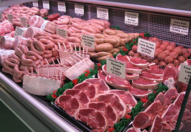

ROYAL BUTCHERY
South Africans love their meat, no two ways about it, especially when roasted over open coals. Some call this a braai, others call it chisa nyama, but it makes no difference on sunny weekends and public holidays, when the sound of sizzling meat can be heard in every second garden across the country.
Born into such a culture, your average South Africa gets to know an above average amount about what constitutes a great cut of meat, and which spicing method is likely to win the day.
At Royal Butchery we recognize this refined level of appreciation, and make it our mission to be the quintessential South African butchery. We know how to cure, we know how to spice, and we really know how to sharpen a knife for the perfect cut, fully understanding that there is no such thing as a great steak that is improperly cut.
